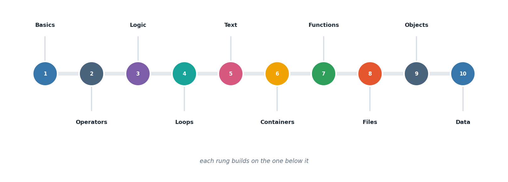

Choose an experiment
each opens a full write-up
In [1]:
Beginner
Getting Python Off the Ground
Installation, the two ways to run code, and your first values
Out[1]: 7 tasks · solved
In [2]:
Beginner
Reading Input and Wielding Operators
Turning stored values into computed answers
Out[2]: 14 tasks · solved
In [3]:
Beginner
Making Decisions
Branching, boolean logic, and choosing one path out of many
Out[3]: 8 tasks · solved
In [4]:
Beginner
Repetition Without Repeating Yourself
for, while, and the classic number problems that teach them
Out[4]: 10 tasks · solved
In [5]:
Beginner
Text and Sets
Working with strings, and the collection built for comparison
Out[5]: 8 tasks · solved
In [6]:
Beginner
The Container Toolkit
Lists, tuples, and dictionaries — and knowing which to reach for
Out[6]: 5 tasks · solved
In [7]:
Intermediate
Functions — Packaging Behaviour
Parameters, return values, recursion, and lambdas
Out[7]: 7 tasks · solved
In [8]:
Intermediate
Files and Failures
Persisting data, and writing code that survives bad input
Out[8]: 5 tasks · solved
In [9]:
Intermediate
Objects — Modelling the World
Classes, inheritance, overriding, and operator overloading
Out[9]: 5 tasks · solved
In [10]:
Intermediate
From Numbers to Insight
NumPy, Pandas and Matplotlib — the data science stack
Out[10]: 7 tasks · solved
